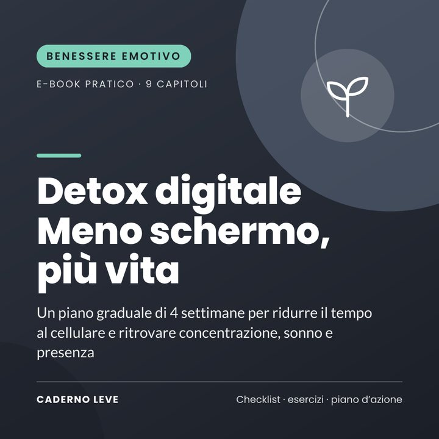

'Detox digitale: meno schermo, più vita'
Un piano graduale di 4 settimane per ridurre il tempo al cellulare senza estremismi e ritrovare concentrazione, sonno e presenza. Con mappa di utilizzo, accordi in famiglia e checklist.
Questo e-book sarà acquistabile a breve.
Pagamento sicuro e consegna del PDF tramite Kiwify
Prezzo in real brasiliani (BRL). Al pagamento vedrai l’importo nella tua valuta.
Prendi il cellulare per guardare l’ora e mezz’ora dopo stai ancora scorrendo lo schermo? Non devi buttare il cellulare: ti serve un piano per tornare a scegliere come usarlo.
Detox digitale: meno schermo, più vita è un e-book pratico con un piano graduale di 4 settimane per ridurre l’uso automatico del cellulare e mantenere ciò che è utile.
Farai una diagnosi del tuo utilizzo, taglierai le interruzioni, creerai zone libere da schermi, troverai gioie lontano da essi, allenerai la concentrazione e definirai accordi con la famiglia.
Che cosa otterrai
- Capire perché è così difficile mollare il cellulare (e cosa fare)
- Fare una semplice diagnosi del tuo utilizzo e fissare un obiettivo realistico
- Ridurre notifiche e interruzioni in meno di un’ora
- Creare zone e orari liberi da schermi per dormire e stare meglio insieme
- Sostituire l’uso automatico con attività che fanno bene
- Allenare la concentrazione con blocchi di lavoro e presenza
Che cosa contiene
- Capitolo 1Quanto spazio occupa il cellulare nella tua vita
- Capitolo 2Perché è così difficile mollare il cellulare
- Capitolo 3Diagnosi: la tua mappa di utilizzo
- Capitolo 4Settimana 1: meno interruzioni
- Capitolo 5Settimana 2: zone e orari liberi da schermi
- Capitolo 6Settimana 3: che cosa fare al suo posto
- Capitolo 7Settimana 4: concentrazione profonda e presenza
- Capitolo 8Schermi in famiglia: accordi per tutta la casa
- Capitolo 9Mantenere l’equilibrio (senza estremismi)
- ExtraRiepilogo e piano d’azione per passare alla pratica
- ExtraScheda di lavoro e checklist da stampare
Per chi è
- Chi sente che il cellulare gli ruba tempo, concentrazione e sonno
- Chi vuole usarlo meno senza estremismi e senza sparire da internet
- Famiglie che vogliono concordare regole sugli schermi valide per tutti
Per chi non è
- Non è un trattamento e non sostituisce la psicoterapia né l’assistenza medica
- Non ha legami con alcuna azienda tecnologica o app
Bonus: scheda di lavoro da stampare — mappa di utilizzo, monitoraggio settimanale delle 4 settimane e checklist quotidiana.
Avvertenza importante
Questo e-book ha uno scopo informativo e di cura di sé. Non fa diagnosi, non è una terapia e non sostituisce la psicoterapia né il supporto medico. Se il malessere è intenso, dura a lungo o interferisce con la tua vita, rivolgiti a uno psicologo o a una psicologa, al tuo medico di base o ai servizi sanitari della tua zona.
Se hai bisogno di parlare con qualcuno adesso, contatta una linea di ascolto o di supporto nelle crisi del tuo Paese. In caso di emergenza, chiama il numero di emergenza locale.